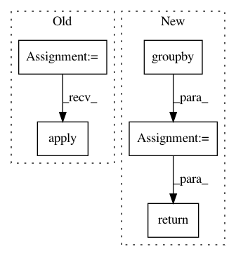

1edd1496383e7ae0374ec5dd8b455d58077e1d62,cnvlib/_merge.py,,_merge_overlapping,#Any#Any#,41
Before Change
if table["start"].nunique() == table["end"].nunique() == 1:
return _squash_rows(table, combiners)
// Identify & enumerate (non)overlapping groups of rows
overlap_sizes = table.end.cummax().values[:-1] - table.start.values[1:]
non_overlapping = np.r_[False, (overlap_sizes <= 0)]
// Squash rows within each non-overlapping group
return (table.groupby(non_overlapping * np.arange(len(non_overlapping)),
as_index=False, group_keys=False, sort=False)
.apply(_squash_rows, combiners))
// Squash rows according to a given grouping criterion
// XXX see also segfilter.py
After Change
// ENH: Find & use a lower-level, 1-pass pandas function
keyed_groups = itertools.izip(_nonoverlapping_groups(table),
table.itertuples(index=False))
merged_rows = [_squash_tuples(row_group, combiners)
for _key, row_group in itertools.groupby(keyed_groups,
lambda x: x[0])]
return pd.DataFrame.from_records(merged_rows, columns=merged_rows[0]._fields)
def _nonoverlapping_groups(table):
Identify and enumerate groups of overlapping rows.
In pattern: SUPERPATTERN
Frequency: 3
Non-data size: 5
Instances
Project Name: etal/cnvkit
Commit Name: 1edd1496383e7ae0374ec5dd8b455d58077e1d62
Time: 2016-10-30
Author: eric.talevich@gmail.com
File Name: cnvlib/_merge.py
Class Name:
Method Name: _merge_overlapping
Project Name: daavoo/pyntcloud
Commit Name: b6106d3044f7800af8710cbdc998ed78f7e6588c
Time: 2016-11-30
Author: daviddelaiglesiacastro@gmail.com
File Name: pyntcloud/structures/octree.py
Class Name: Octree
Method Name: get_level_as_sf
Project Name: soft-matter/trackpy
Commit Name: dbeab7509cfec1314b6529d57fbd090ce744695c
Time: 2017-07-27
Author: caspervdw@gmail.com
File Name: trackpy/motion.py
Class Name:
Method Name: compute_drift